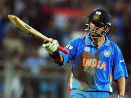

M.S.Dhoni (c)

Dhoni's leadership in the 2011 World Cup was exemplary, guiding the Indian team to their first World Cup victory in 28 years. His unbeaten innings of 91 runs in the final against Sri Lanka showcased his ability to perform under pressure and led the team to victory. Dhoni's calm and composed demeanor on the field instilled confidence in his teammates and helped them stay focused in crucial moments. He played several crucial innings throughout the tournament, displaying his ability to finish matches and steer the team towards victory. Dhoni's quick reflexes behind the stumps were on full display as he affected important dismissals throughout the tournament.
His astute decision-making as a captain, including promoting himself up the batting order in the final, proved to be game-changing. Dhoni's leadership during the tournament earned him widespread praise and solidified his reputation as one of the greatest captains in cricket history. His ability to read the game and make tactical decisions was evident in the way he marshaled his bowlers and set the field. Dhoni's understanding of his players' strengths and weaknesses helped him make effective bowling changes and strategic field placements. His contributions both as a batsman and a leader were crucial in India's successful campaign, making him a true hero of the 2011 World Cup.
Yuvraj Singh
Yuvraj Singh's all-round performances in the 2011 World Cup made him the standout player of the tournament. He was awarded the Player of the Tournament for his consistent contributions with both bat and ball. Yuvi's ability to score runs under pressure and pick up crucial wickets at crucial moments made him a true match-winner. His batting performances were exceptional, as he scored 362 runs and hit four crucial half-centuries during the tournament. Yuvi's aggressive strokeplay and ability to clear the boundaries made him a dangerous batsman in all situations.
His ability to rotate the strike and build partnerships added stability to the Indian middle order. Yuvi's left-arm spin bowling was highly effective, as he picked up 15 wickets and troubled batsmen with his variations. His fielding skills were top-notch, as he took some outstanding catches and saved crucial runs for the team. Yuvi's ability to perform consistently in high-pressure situations made him a valuable asset to the Indian team. Overall, Yuvraj Singh's performances in the 2011 World Cup showcased his all-round abilities and his ability to rise to the occasion in big tournaments.
Gautham Gambhir

Gautam Gambhir's batting performances in the 2011 World Cup played a crucial role in India's journey to victory. His knock of 97 runs in the final against Sri Lanka displayed his ability to anchor the innings and absorb pressure. Gambhir's positive and aggressive approach at the top of the order often provided India with a flying start in the powerplay overs. His ability to build partnerships and rotate the strike effectively helped stabilize the Indian innings on multiple occasions. Gambhir's batting technique and shot selection were impeccable, allowing him to score runs consistently throughout the tournament.
He displayed great mental strength and determination, often stepping up when the team needed him the most. Gambhir's ability to counter both pace and spin made him a formidable batsman in all conditions. His fielding prowess was also noteworthy, as he took some breathtaking catches and saved valuable runs in the outfield. Gambhir's contributions to the team extended beyond his batting, as he provided valuable insights and guidance to his teammates. Overall, Gambhir's performances in the 2011 World Cup showcased his skill, resilience, and determination as a top-order batsman.
Sachin Tendulkar
Sachin Tendulkar's performances in the 2011 World Cup were nothing short of exceptional, solidifying his status as a cricketing legend. He became the highest run-scorer of the tournament, scoring two vital centuries and playing several crucial innings for the Indian team. Sachin's ability to dominate bowlers and score runs under pressure was on full display throughout the tournament. His masterful strokeplay and impeccable timing were a treat to watch, as he dismantled bowling attacks with ease. Sachin's experience and composure in high-pressure situations provided stability to the Indian batting lineup.
He showcased his ability to adapt to different conditions and play different roles as per the team's requirements. Sachin's presence in the team provided inspiration to his teammates and instilled belief in their abilities. His dedication and passion for the game were evident in his performances and his commitment to the team's success. Sachin's ability to absorb pressure and guide the team through difficult situations made him a true match-winner. Overall, Sachin Tendulkar's performances in the 2011 World Cup were a testament to his greatness as a cricketer and his immense contribution to Indian cricket.
Virendar Sehwag (vc)
Virender Sehwag's aggressive batting style in the 2011 World Cup brought a new dimension to India's batting lineup. His explosive starts at the top of the order often set the tone for India's innings and put the opposition on the back foot. Sehwag's ability to dominate bowling attacks from the very beginning of the innings made him a feared batsman in the tournament. His ability to score runs quickly and take the game away from the opposition was a valuable asset for the Indian team. Sehwag's fearless approach to batting often put pressure on the opposition bowlers and provided momentum to the team.
His ability to play both orthodox and unorthodox shots with equal effectiveness made him a difficult batsman to contain. Sehwag's aggressive intent rubbed off on his teammates, creating a positive and fearless atmosphere within the team. His fielding skills were also impressive, as he took some stunning catches and saved crucial runs in the outfield. Sehwag's contributions with the ball as a part-time bowler added depth to the Indian bowling attack. Overall, Virender Sehwag's performances in the 2011 World Cup were a testament to his aggressive batting style and his ability to change the course of a match.